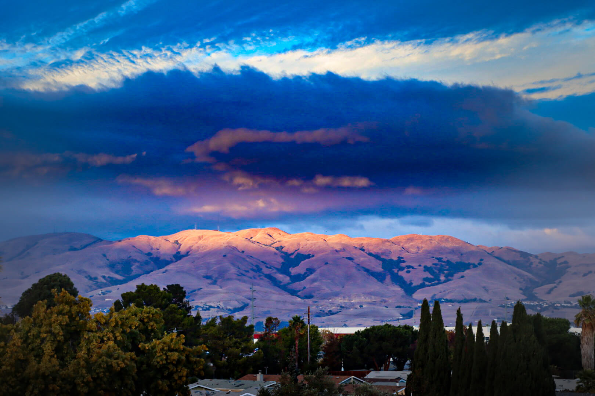
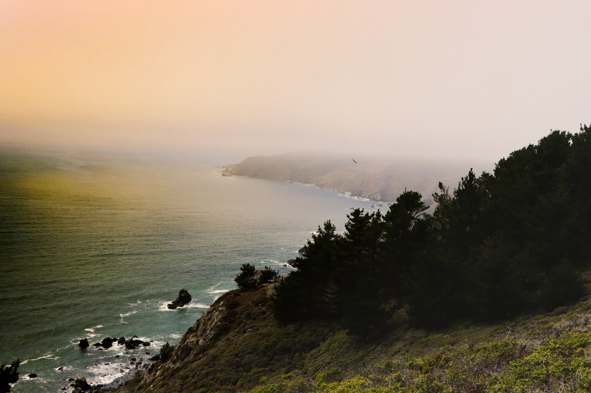

The Palace of Fine Arts is a monumental structure located in the Marina District of San Francisco, California, originally constructed for the 1915 Panama–Pacific International Exposition to exhibit works of art. Completely rebuilt from 1964 to 1974, it is the only structure from the exposition that survives on site.
2
Sunset
Use hand to touch the sun in the sunset time, pick up the sun, close the sun in your hand, yellow light with cold air, flare light from sunrise, symbols of hope.

3
Sun , Cloud , Mountain
This Photo is Sunrise above the Clouds. A beautiful view from my balcony. Mixing sun behind the clouds and small light in beautiful mountain can be a reason to start my day full of love and energy.

4
Mori Point, CA
Head out on this 2.5-mile loop trail near Pacifica, California. Generally considered a moderately challenging route, it takes an average of 1 h 8 min to complete. This is a very popular area for hiking, running, and walking, so you'll likely encounter other people while exploring. The trail is open year-round and is beautiful to visit anytime.